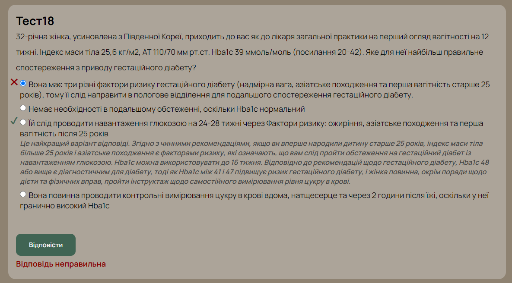
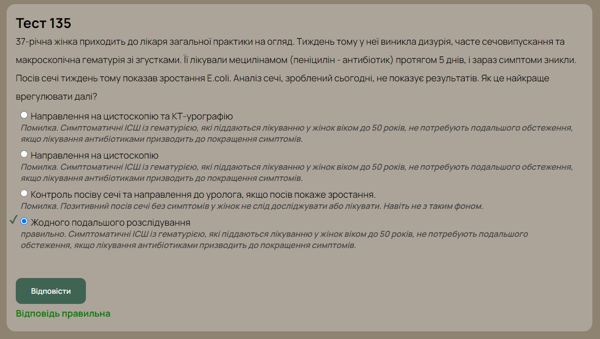
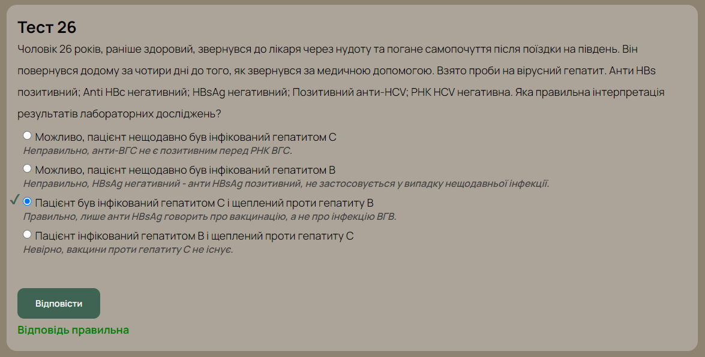

-
UA

- ENG
Перша публікація: 05 жовт. 2024
Дата останньої редакції: 16 груд. 2024

Rogaland, Norge - Juni 2024
Fagprøven це державний іспит в Норвегії, який перевіряє рівень медичних знань у лікарів. Він складається з 3 частин: тестової, усної та клінічної. Складання кожної частини займає один день. Місце його складання, це тільки в Осло. Складати іспит його можна після отримання рівня В2 з норвежської мови та отримання дозволу від Helsedirektoratet. Якщо порівнювати з українськими іспитами, то це як КРОК, ОСКІ та державні іспити.
Після отримання дозволу у вас є 3 спроби та 3 роки, що б його скласти.
Складається з 140 питань. У вас будуть тести, як з базових дисциплін (біохімія, фармакологія, фізіологія і т.д.), так і з клінічних. Для скаладання необхідно отримати мінімум 65%. Для підготовки рекомендується використовувати тести попередніх років та рекомендовані підручники (напр. Allemennmedisin). Зазвичай їх можна купити на finn.no.
Тести попередніх років можна проходити в веб-додатку за посиланням: Перейти
Приклади тестів з попередніх років перекладені на українську мову:



Як і в тестовій частині, питання будуть з дисциплін усіх 6 курсів медичного університету. Іспит триває 30 хвилин. У екзамінатора є референс правильної відповіді, і він буде порівнювати наскільки вона співпадає з вашою відповіддю.
В останній частині у вас будуть станції з пацієнтами. Вам необхідно буде провести обстеження та поставити правильний клінічний діагноз. Роль пацієнтів будуть грати актори. Буде 10 станцій та 7 хвилин на 1 станцію.
Тести та завдання дуже схожі з тим, що ми мали в університеті. Тому основний акцент треба зробити на вивченні мови.
Ціна за весь іспит на 2024 рік складає 49000 крон (16333 крон за 1 частину).
Корисні посилання:
Інформація про Fagprøven з офіційного сайту